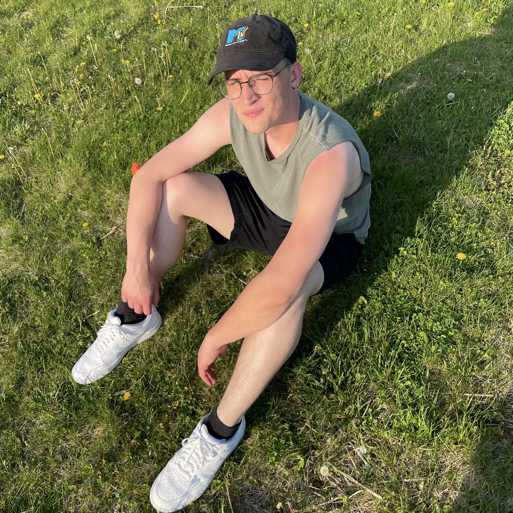

We created this website in accordance with the projects of CS347 - Web
Development. This course covered a wide range of topics from html to SQL to databasing.
1 / 2

Lee Ramey
Lee is a student of Computer Science at James Madison University. He graduated
from Germanna Community College in 2019 and has since been working towards his
Computer Science degree at JMU. He hopes to graduate with in Spring of 2023.
2 / 2
Jakob Lindo
Jakob Lindo is a student of Computer Science at James Madison
University. He currently holds a job at the Virginia Space Flight
Academy, where he holds the title of Assistant Camp Director. Jakob
plans to graduate from JMU with a Bachelors of Science in Computer
Science in 2023.